Vejerslev
Schiffssetzung (rekonstruiert)
Lage der einstigen Steinsetzung


Der östlich gelegene Fluss Gudenå

Runenstein (mittelalterlich)
Grobkörniger, rötlicher Granit
H: 160 cm
B: 73 cm
D: 40 cm
Inschrift:
Iwar meisselte diese Runen über Skalmi, seinem Bruder (d.h. in den Leichenstein auf dem Grabe seines Bruders Skalmi).

57 - Vejerslev - ehemalige Schiffssetzung (Seit 10/2020 rekonstruiert) - Letztes Update 15.09.2025
Navidaten: 56.30127 9.68467 oder: Borrevej 1, 8850 Bjerringbro
Von dort nur noch zu Fuß weiter zur Position: 56.30444 9.68160 (Schiffssetzung neben der Waldlichtung)
Diese Schiffssetzung wird nach den neuesten Ausgrabungen, Metalldetektorfunden usw. auf ca. 600 n. Chr. datiert und ist demzufolge nicht der Wikingerzeit zuzuordnen. Ich belasse die faszinierende Örtlichkeit dennoch auf meiner Homepage.
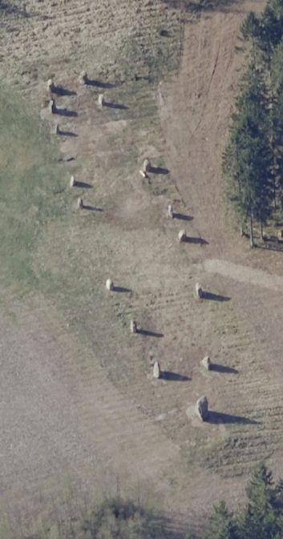
Dies ist ein Luftfoto vom 28.04.2021 von Skråfoto, das die Schiffssetzung zeigt. Skråfoto ist eine Webanwendung, die von Klimadatastyrelsen weltweit kostenlos bereitgestellt wird - Freie Nutzung unter Beachtung der Lizenz: CC BY 4.0. Die Aufnahmen werden seit 2017 alle zwei Jahre erneuert und neben einer Senkrechtaufnahme wird ein Schrägbild aus jeder Himmelsrichtung angeboten, das man über eine Adresssuche aufrufen kann. Die Aufnahme vom 02.04.2023 weist zu viel Schatten auf, während die Rekonstruktion der ehemaligen Schiffssetzung auf den Aufnahmen vom 06.05.2017 und 21.04.2019 noch nicht errichtet war.
Im Rahmen meiner 2022er Jütland Wikinger Tour hatte ich vom 30.05. bis zum 17.06.2022 meine Unterkunft - Seng og Kaffe B&B - in Fårvang - in ca. 8 km Entfernung. Mit meinem Fahrrad war ich von daher an mehreren Tagen hier und habe zahlreiche Fotos zu unterschiedlichen Zeiten gemacht.
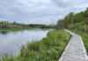 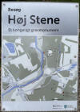 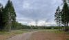 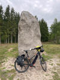 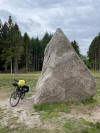 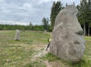 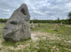 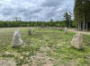 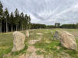 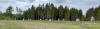 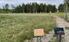


Während diese Fotos die Schiffssetzung aus den verschiedenen Blickwinkeln zeigen, von Kongens Bro entlang der Gundenå über den Trækstien Richtung Nordosten und dann rechter Hand zur Schiffssetzung, sieht man an ihrem südlichen Ende diese Senke, die den dortigen, ursprünglichen Grabhügel abbildet. Siehe unten den LIDAR Scan (mittlere, graue Abbildung im unteren Bereich)

Es war für mich jedes Mal ein besonderer Moment hier zu sein, auch wenn es nur eine moderne Rekonstruktion ist, die die verlorene historische Schiffssetzung wiedergibt.
Erst während meiner 2016er Wikinger-Tour wurde ich auf die 2016er Untersuchungen des Moesgård Museums in Verbindung mit der Universität von Aarhus zu der verschwundenen Schiffssetzung von Vejerslev aufmerksam - siehe hier (PDF-Datei - siehe S. 24). Es war wohl nach der gigantischen Schiffssetzung von Jelling die zweitgrößte Schiffssetzung in Dänemark, ja ganz Skandinaviens.
Im Archiv des Nationalmuseum in Kopenhagen befinden sich die ältesten Erkenntnisse zu der Lage der Schiffssetzung. Die erste schriftliche Erwähnung stammt von 1683 mit der Bezeichnung "Høys Steen" aus den dänischen Katasterverzeichnissen aus der Zeit des dänischen Königs Christian V. (*15.04.1646 - 25.08.1699) - Arkiv: Rentekammeret - Christian 5.s matrikel. Markbøger samt eng-, skov- og græsningstaksationer (1681-1683) - Houlbjerg Herred - 1265
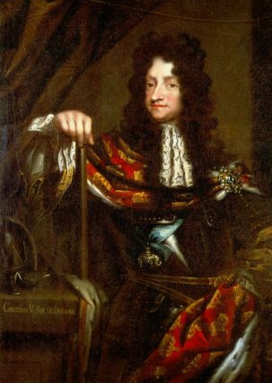
Bildquelle: Wikipedia - Lizenz: Public DomainDann finden sich Informationen in "Den danske Atlas" von Erik Pontoppidan (der Jüngere, *03.09.1698 - 20.12.1764, dänisch-lutherischer Bischof, Theologe und Autor)
 Bildquelle:
Wikipedia - Lizenz:
Public Domain
Bildquelle:
Wikipedia - Lizenz:
Public Domain
Erste visuelle Beschreibung Dänemarks in Form von Kupferstichen in 7 Bänden, entstanden zwischen 1763 und 1781 - Komplette Ausgabe mehrfach über Antiquariate erhältlich - aktuellem Kaufpreis von 3500 bis zu 13500 ! - Ein tolles 7-bändiges Faksimile von ca. 1970 gibt es dagegen schon für knapp 200 im Antiquariat!
Darin heißt es in Band IV, von 1768, S. 427, Nr. 7f (S. 37 in der pdf-Datei): "...Paa samme Mark sydvest fra Byen imod Guden-Aae ligge tvende smaae Høie med store Stene om i en aflang kreds, omtrent 100. Skrit fra hinanden, som formodentlig ere hedenske Begravelser."
Übersetzung: Auf demselben Feld südwestlich der Stadt in Richtung Guden-Aae liegen zwei kleine Hügel mit großen Steinen in einem langgestreckten Kreis, etwa 100 Schritte voneinander entfernt, vermutlich heidnische Bestattungen.)
Die nächste Nachricht stammt wohl vom 28.07.1808, als der örtliche Pfarrer, H. Hassager, einen Bericht abgab. Seitens der Altertümerkommission in Kopenhagen war namlich 1807 über die Bischöfe eine 12 Punkte umfassende Liste an alle Pfarrer im Land ergangen. Sie sollten darüber zu einem "verlängerten Auge" der Kommission werden, die sich mal wieder einen umfassenden Überblick über alle historischen Relikte im Land machen wollte. Der Pfarrer schreibt in seinem Bericht von 13 großen Steinen zwischen zwei Hügeln, sieben auf der einen und sechs auf der anderen Seite, die in einem ovalen Kreis aufgestellt sind, der eine Ausdehnung von ca. 100 Schritten hat. Noch 60 Jahre zuvor seien es ab er noch mehr Steine gewesen, die dann jedoch entfernt, zerschlagen und anderweitig Verwendung fanden. Die Stätte würde als "Høy-Stene" bezeichnet.
Quelle: Danske Præsters Indberetninger til Oldsagskommissionen af 1807, Nord- og Østjylland, Wormianum, Højbjerg 1996, Redigeret af Christian Adamsen og Vivi Jensen, S. 206/207
In dem 1809 erschienenen Buch von Prof. Børge Thorlacius (*29.04.1775 (Laut diesem Eintrag, aber überall mit 01.05.1775 angegeben) - 08.10.1829, ev. Theologe, Klassischer Philologe, Archäologe - link-LIVES)
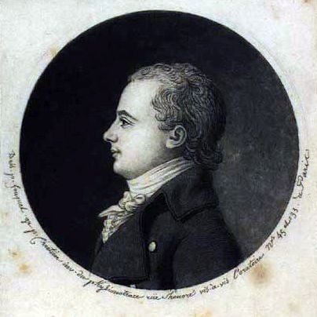
Bildquelle: Wikipedia - Lizenz: Public Domainmit dem Titel Bemærkninger over de i Danmark endnu tilværende Hedenolds-Höie og Steensætninger findet sich auf der S. 60 dieser Eintrag: "Paa Vejerslev Mark nær Gudenaae i Aarhuus Stift en mærkelig Thingkreds imellem 2 smaa Höie. Af de mange Kredsstene, som der have været, ere endu 13 tilbage, af hvilke 7 staae opreiste 2 1/2 Al. over jorden. Man kan af dem noksom slutte sig til Steenkredens Pragt; Stenene kaldes Höi - Stene."
Übersetzung: "Auf Vejerslev Mark in der Nähe von Gudenaae in der Diözese Aarhus, ein seltsamer Thingkreis zwischen zwei kleinen Hügeln. Von den vielen Kreissteinen, die dort gewesen sind, sind nur noch 13 übrig, von denen 7 aufrecht 2 1/2 Alen * über dem Boden stehen. Von ihnen kann man sich ganz einfach dem Glanz der Steinkreise anstecken lassen; Die Steine heißen Höi - Steine."
*Anmerkung: 1 dänische Elle entspricht 0,6277 m - nach Einführung des Metersystems per Gesetz vom 4.5.1907 in Dänemark kein gesetzliches Maß mehr.
Die u.a. linke Zeichnung von ca. 1850 zeigt den Grundplan der Vejerslev Schiffssetzung. Diese entstammt einem Bericht des Schullehrers Josef Christensen (*1802 - 01.12.1891 - link-LIVES). Demnach hatte sie wohl eine Länge von etwa 88 m und eine größte Breite von etwa 13 m.
Seinem Bericht nach waren die zu der Zeit erhaltenen 16 Steine zw. 2 m und 4 m Abstand aufgestellt und hatten eine Höhe zwischen 1,90 m und 2,50 m über dem Erdboden. Der nördliche Stevenstein hatte diesem Bericht zufolge eine Höhe von 4,50 m über dem Erdboden!
Die Schiffssetzung soll ursprünglich aus insgesamt 26 ca. 2 m hohen Steinen bestanden haben, nämlich aus zwei Reihen zu je 12 Steinen plus die beiden Stevensteinen auf den beiden Grabhügeln. Die Steine sollen in der typischen Anordnung einer Schiffssetzung, nämlich spitzoval gestanden haben. Diesen historischen Quellen zufolge befand sich die Schiffssetzung nordöstlich der Königsbrücke über die Gudenå, ca. 170 m von der Gudenå entfernt, zwischen zwei kleinen Grabhügeln von ca. 14 m bis 16 m Durchmesser.
Den Berichten kann auch entnommen werden, dass im Jahre 1743 Steine aus der Schiffssetzung entfernt wurden. Die restlichen, verbliebenen Steine wurde dann wohl etwa 100 Jahre später weggeschafft. Noch um 1850 wurde die Gegend übrigens als waldfreie Ebene bedingt durch Flugsand bezeichnet!
Ein neuerlicher Bericht des Schullehrers Josef Christensen ist in dem Aufsatz "Veierslev og Aigt Sogne" in: Samlinger til jydsk Historie og Topografi, bd. 6, første række. 1876, Ålborg, S. 281-311 (ab S. 287 in der pdf-Datei) veröffentlicht worden. Auf den Seiten 296/97 ist die betreffende Passage zu der Schiffssetzung (ab S. 302 in der pdf-Datei):
"Paa Veierslev vestre Mark i Gudenaadalen, omtrent 160 Skridt fra Gudenaa, lige overfor Byen Braarup, var indtil Aaret 1852 endnu den betydeligste Deel tilstede af et vigtigt Mindesmærke fra Oldtiden, nemlig et Thingsted af Skibsform af opreiste Steen. Det havde en Længde fra Stavn til Stavn af 140 og en Brede paa Midten af 30 Alen og havde oprindelig bestaaet af 26 opreiste omtrent 4 Fod høie Kampesteen, 12 paa hver Side og een noget større og høiere i hver Stavn, hvilke vare reiste hver paa en lille Høi. Af disse Stene vare de 16 endnu tilstede, indtil der det nævnte Aar foretoges Anlæg af en Trækbane for Pramfarten paa Gudenaa, hvortil de tilbageværende Steen af Thingstedet bleve tagne, kløvne og anvendte. Den daværende Fæster af Marken, hvorpaa Thingstedet befandtes, Erik Christensen, gjorde vel Indsigelser imod Borttageisen, men hans Forbud blev upaaagtet. Saaledes forsvandt dette betydelige Mindesmærke om Indretningen af vore Forfædres Retterthing, og er der nu intet andet Spor deraf end de 2 smaa Hoie, der have baaret Stavnstenene. Nogle Agre i Nærheden af Thingstedet havde Navn af »Thingagre« og nogle mindre Tværagre kaldtes »Kagsblokker«. Thingstedet laae kun 2000 Alen Sydøst fra Ilensborg, og fra Veierslev var en gammel Vei meget kjendelig igjennem Skoven ned mod Thingstedet. Nu er Stedet saavelsom den Deel af Gudenaadalen, som ligger i Veierslev Sogn, indtaget til Beplantning med Naaleskov, saaledes som det er antydet paa Mansas Kort."
Übersetzung: "Auf dem Westfeld von Veierslev in Gudenaadalen, ungefähr 160 Schritte von Gudenaa entfernt, direkt gegenüber der Stadt Braarup, war bis zum Jahr 1852 noch der bedeutendste Teil eines wichtigen Denkmals aus der Antike vorhanden, nämlich eine schiffförmige Stätte aus aufrechtem Stein. Es hatte eine Länge von Steven zu Steven von 140 und eine Breite in der Mitte von 30 Ellen und bestand ursprünglich aus 26 aufrechten etwa 4 Fuß hohen Felsbrocken, 12 auf jeder Seite und einem etwas größeren und höheren in jedem Steven, jeder stand auf einem kleinen Hügel. Von diesen Steinen waren noch 16 vorhanden, bis im erwähnten Jahr der Bau eines Treidelpfades für die Schifffahrt auf der Gudenaa unternommen wurde, für den die restlichen Steine von der Stelle genommen, gespalten und verwendet wurden. Der damalige Besitzer des Feldes, auf dem sich das Gelände befand, Erik Christensen, widersprach vermutlich der Entfernung der Steine, aber sein Verbot wurde ignoriert. So verschwand dieses bedeutende Denkmal unserer Vorfahren, und es gibt jetzt keine andere Spur davon als die 2 kleinen Hügel, die die Stevensteine getragen haben. Einige Felder in der Nähe von Thingstedet wurden "Thingagre" genannt und einige kleinere Querfelder wurden "Kagsblokker" genannt. Thingstedet lag nur 2.000 Ellen südöstlich von Ilensborg, und von Veierslev war eine alte Straße sehr gut erkennbar, die durch den Wald hinunter nach Thingstedet führte. Jetzt wurde das Gelände sowie der Teil von Gudenaadalen, der in der Gemeinde Veierslev liegt, für die Bepflanzung mit Kiefernwald übernommen, wie auf Mansas Karte angegeben.
Daraus geht auch auch noch hervor, dass die letzten erhaltenen Steine im Jahre 1852 für einen Treidelweg entlang des Flusses Gudenå in Stücke gehauen und weggeschafft wurden. Dies geschah offenbar gegen den Willen des damaligen Grundbesitzers Erik Christensen (*1787 - ? - link-LIVES).
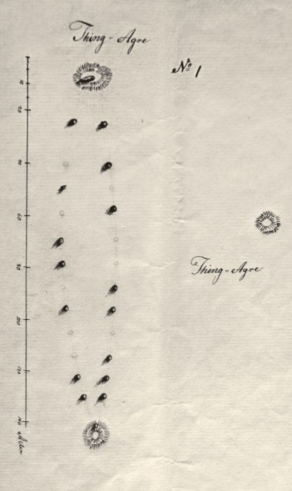
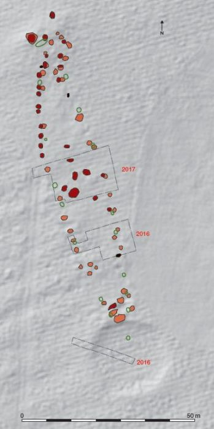
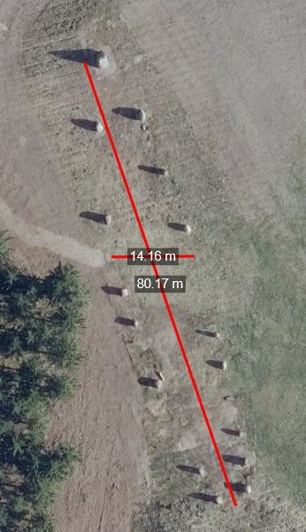
Die mittlere Skizze entstammt dem Bericht "Høj Stene en monumental skibssætning ved Gudenåen", von Mogens Høegsberg, Jens Jeppesen und Jesper Laursen, KUML Nr. 68 von 2019, S. 52.
Legende: Die Ergebnisse der beiden geophysikalischen Untersuchungen sind rot und orange markiert. Noch sichtbare Steine auf der Oberfläche sind schwarz markiert. Die kreisförmige Senke - der negative Abdruck des ehemaligen Grabhügels - am südlichen Ende der Schiffssetzung ist auf dem Lidar-Scan deutlich zu erkennen - Dieser Scan wurde als Hintergrundkarte verwendet. Der nördliche Grabhügel ist auch gerade noch sichtbar, obwohl er schon weitgehend nivelliert war. Auf dem Plan sind auch die Grabungen von 2016 und 2017 eingezeichnet. Das Ergebnis der Vermessung von 1850 ist grün gekennzeichnet.
Das rechte Luftbild stammt von "Skraafoto.dk" (Styrelsen for Dataforsyning og Effektivisering) und wurde am 28.04.2021 aufgenommen. Über diese Webseite kann man das ausgewählte Terrain/Objekt auch ausmessen. Darüber ist erkennbar, dass sich die Rekonstruktion exakt an der Skizze links von 1850 anlehnt. Die Schiffssetzung findet ihr auf deren Seite am einfachsten über diesen Link.
Johannes Brøndsted (*05.10.1890 - 16.08.1965, dänischer Archäologe, Prähistoriker und Direktor des Dänischen Nationalmuseums von 1951 bis 1960 - link-LIVES)
versuchte 1929 die Schiffssetzung zu lokalisieren. Er schrieb dazu: "Runder Hügel in Plantage, verstreut mit Kiefern bewachsen. Bereits in alter Zeit geschleift. 0,75-1,00 x 14-16 m. Ein Waldweg in der Mitte mit N-S-Kreuzung. In einer flachen Ausgrabung im Süden sind ein paar große Steine zu sehen.
Quelle: Høj Stene en monumental skibssætning ved Gudenåen", von Mogens Høegsberg, Jens Jeppesen und Jesper Laursen, KUML Nr. 68 von 2019, S. 48.
Bei meiner Erkundungstour am Samstag, 27.08.2016, entdeckte ich die Örtlichkeit neben einer Lichtung mitten im Wald, zwischen dem Fluss Gudenå und der Straße 575 (Borrevej) vor (siehe o.a. Koordinaten).
Ich fand lediglich den einen flach liegenden, größeren Stein vor - siehe Fotos links. Die abgeholzte Fläche, an der die Schiffssetzung gelegen haben soll ist schon wieder ordentlich bewachsen. Ich habe eine Anfrage zu den Untersuchungsergebnissen an das MoMu in Moesgård gerichtet. Ich bekam Mitte Novemeber 2016 zur Antwort, dass die Untersuchungen noch auf mehreren Ebenen laufen und nach deren Abschluss die Öffentlichkeit unterrichtet wird.
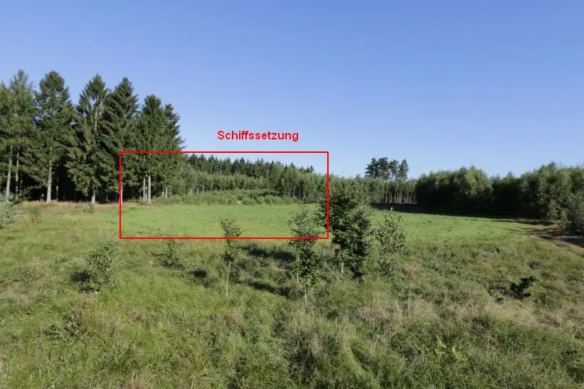
Zufällig fand ich nun am Donnerstag, 21.12.2017, über die Homepage des MOMU Museums in Aarhus eine Info zu den Untersuchungen der Vejerslev Schiffssetzung. Demnach handelt es sich vielleicht um das älteste bekannte Königsgrab Dänemarks. Bemerkenswerte Goldfunde aus der Stätte zeigen, dass die steinerne Schiffssetzung ein außergewöhnlich reichhaltiges Feuerbestattungsgrab aus der spätgermanischen Eisenzeit (550-750 n. Chr.) umrahmte.
Auszugs aus diesem Online Bericht:
"Die Größe des Denkmals ist ein deutlicher Hinweis auf die Anwesenheit einer Elite in Jütland und das bemerkenswerteste Grabmal Dänemarks in dieser Zeit. Dies ist die gleiche Zeit, in der eine neue mächtige Elite und Monarchie in Skandinavien mit den großen königlichen Residenzen in Lejre in Dänemark, in Uppsala in Schweden und in England mit der reichen königlichen Schiffsgrabstätte in Sutton Hoo auftaucht ", sagt Mads Kähler Holst , Direktor des Moesgaard Museums.
Mit finanzieller Unterstützung von A. P. Møller und Hustru Chastine Mc-Kinney Møllers Fond til almene Formaal hat das Moesgård Museum in den letzten Jahren mehrere Untersuchungen in diesem Gebiet vorgenommen. Eine Reihe von geophysikalischen Untersuchungen wurde zunächst durchgeführt, um den Standort dieses bemerkenswerten Denkmals ausfindig zu machen. Dies führte zur Feststellung einer spitzovalen Formation, die sich zwischen einem nördlichen Grabhügel, der die Jahrhunderte überstanden hat und den Überresten eines vollständig eingeebneten südlichen Grabhügels, erkennbar als kreisförmige Vertiefung, erstreckte. Im dazwischenliegenden Bereich befanden sich auch mehrere große Steine. Sorgfältige archäologische Untersuchungen bestätigten die Vermutung, dass der Standort der gesuchten Schiffssetzung tatsächlich lokalisiert werden konnte.
Über die Homepage https://historiskekort.dk/ habe ich diese Landkarte aus dem Jahr 1805 im Maßstab 1:4000 ausfindig gemacht. Darin ist der Eintrag "Skien" an der Stelle vorgenommen worden, an der die Schiffssetzung lag. (Kartenzuschnitt von mir - Wort rot umrandet).
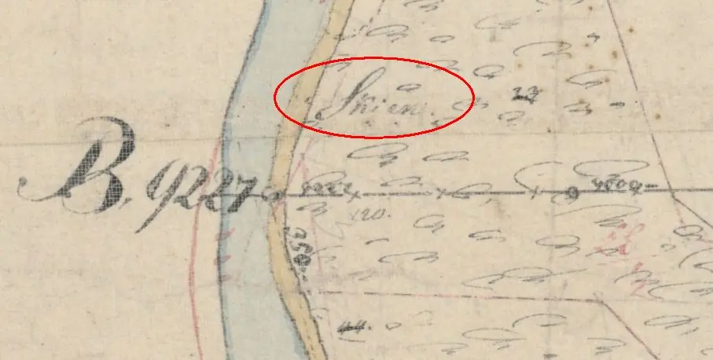
Dazu gibt es den Artikel "En sløjfet skibssætning og et muligt skibssætningsnavn i Vejerslev, aus: Om tolkningen af glda. skth, f., i betydningen 'skibssætning' von Rikke Steenholt Olesen (Namensforscher, Sprachhistoriker und Runologe, Universität Kopenhagen), 2014, S. 189-190. Darin wird die Auffassung vertreten, dass es sich um den Namen der (2014 noch) verschwundenen Schiffssetzung gehandelt haben könnte. Kurz vor Abschluss dieser Abhandlung erhielt der Autor zu seiner These über die Wiederentdeckung der Schiffsetzung vor Ort quasi eine Bestätigung.
Auf der Homepage https://historiskekort.dk/ habe ich auch diese Landkarte aus dem Jahr 1842 entdeckt, in der die Schiffssetzung noch eingezeichnet ist (Kartenzuschnitt von mir - Schiffssetzung rot umrandet).
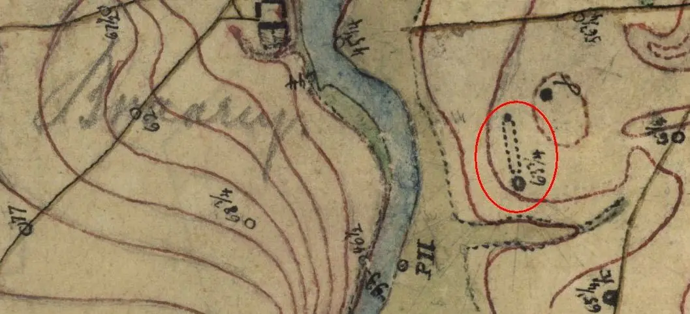
Messtisch Blatt aus dem Jahr 1842 mit dem Titel: "Trust N" - Maßstab unbekannt.
Ebenfalls über die Homepage https://historiskekort.dk/ habe ich diese Landkarte aus dem Jahr 1847 gefunden.
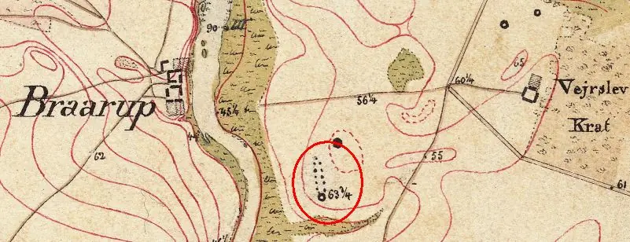
Messtisch Blatt aus dem Jahr 1847 mit dem Titel: "Trust Ans" im Maßstab 1:20.000 - mit eingezeichneter Schiffssetzung (Kartenausschnitt von mir - Schiffssetzung rot umrandet).
Auch das Messtisch Blatt aus dem Jahre 1877 weist meines Erachtens noch die Lage der Schiffssetzung auf, wie man hier sehen kann (Kartenausschnitt von mir - Schiffssetzung rot umrandet).
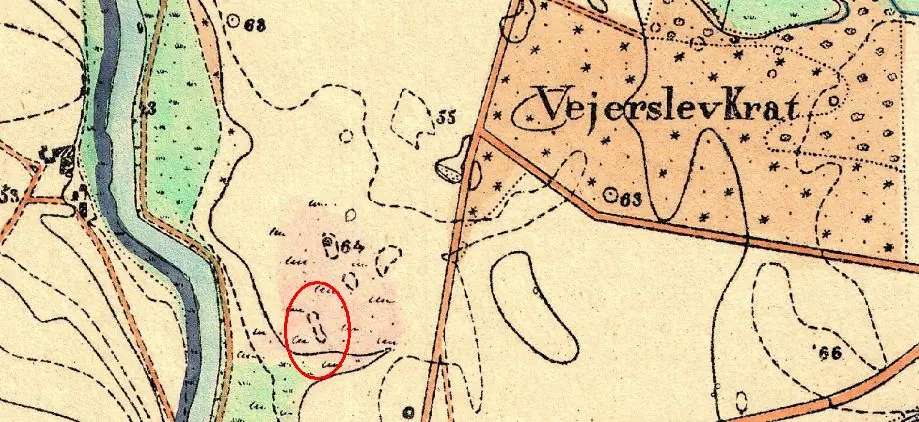
Karte im Maßstab 1:20000, Titel "M16.Vejerslev", 1876 und 77,
Im Zusammenhang mit den archäologischen Untersuchungen wurde eine
umfangreiche
Metalldetektoruntersuchung durchgeführt.
Dies führte zur Auffindung der Metallfunde aus dem Zentrum der Struktur,
die aus einer Feuerbestattung stammen müssen.
Die Funde stammen aus der Zeit um 600 n.Chr. Dies ist die Zeit, in der eine neue
und mächtige Elite und Monarchie entsteht.
Die neuen Könige und Magnaten der Residenzen in
Lejre,
Uppsala und
Sutton Hoo scheinen
eng miteinander
verbunden zu sein.
Sie verwendeten die gleichen Symbole und hatten fast identische reiche
Tierornamentik auf ihren Artefakten.
Das Schiff stand im Zentrum ihrer Bestattungen, entweder
in Form von
Schiffsbestattungen oder Steinschiff Setzungen.
"Das Vejerslev-Begräbnis offenbart einen bisher unbekannten Aspekt dieser
Geschichte, mit dem größten jemals aus dieser Zeit gefundenen Steinschiff, das
Goldfunde enthält, die denen anderer Elitestätten in nichts nachstehen, obwohl
der Scheiterhaufen viel zerstört hat", sagt
Mads Kähler Holst
(*30.08.1973, Archäologe).
Aufgrund des bemerkenswerten Charakters des Standortes besteht der Wunsch,
dass die Schifsssetzzung wiedererrichtet wird. Es wurden bereits Planungen dazu
aufgenommen.
Es besteht auch die Absicht die Monumente zu visualisieren und darüber dauerhaft zu
präsentieren."
Inzwischen ist auch in der dänischsprachigen Zeitschrift SKALK, 2018, Heft 4, Seite 3 - 8, ein ausführlicher Bericht mit Bildern erschienen.
12.10.2020 (aktualisiert 30.04.2021) - Im Internet fand ich hier einen Hinweis, wonach die Schiffssetzung mit insgesamt 16 riesigen Steinen im September 2020 vor Ort rekonstruiert wurde. Die Gesamtkosten für die Erforschung/Wiederherstellung der Schiffssetzung belaufen sich auf insgesamt ca. 2 Millionen DK Kronen (ca. 270000 ). Auf der Webseite ist auch eine auf YouTube eingestellte Animation eingebettet (18 Sekunden lang), die die Schiffssetzung zur Zeit der Bestattung zeigt.
Der große "Stævnstenen" wird über die Mineralienzusammensetzung als alkalischer Feldspatgranit klassifiziert und ist darüber charakteristisch als "Småland Granit" zu identifizieren. Er wiegt 32,7 Tonnen und ragt stolze 4,20 m in die Höhe! Der vertikale Umfang beträgt 11,7 m, die breiteste Stelle horizontal noch 3,1 m (Umfang darüber von 7 m). Außerdem beträgt sein Volumen ca. 12 m3. Er wurde in der letzten Eiszeit vom Inlandeis von Schweden nach Seeland transportiert. Irgenwann in den 1990er Jahren wurde er in einer Kiesgrube in Lynge, in der Nähe von Sorø auf Seeland entdeckt und dort zunächst aufgestellt. Er sollte zum 25-jährigen Thronjubiläum von Königin Margarethe II. zu einer Skulptur verarbeitet werden. Aber wie so oft scheiterte auch dieses Projekt am lieben Geld. Man hörte dann aber von dem Projekt der Schiffssetzung, die Museumsleute begutachteten den Stein vor Ort und kauften ihn für 20.000 Kronen (ca. 2700 - plus MwSt). Inklusive Steuer sind dies 75 Øre (ca. 3,5 Cent) je Kilogramm. Im Herbst 2019 wurde er dann mit schwerem Gerät mittels einem Art Schlitten an die nächste Straße gezogen und mit einem Tieflader an die Örtlichkeit gebracht. Auf die gleiche Art und Weise kam er von der Straße an seinen Bestimmungsort auf der Lichtung mitten im Wald. Über diesen Link findet sich ein ca. 2 minütiger Video über diesen Giganten und über den Link hier ein TV Film von sogar fast 30 Minuten. Schon interessant mal zu sehen (auch wenn man fast nix versteht), wie auch mit heutigen technischen Mittel Aufwand betrieben werden musste, um diesen riesigen Brocken über ca. 250 km von Sorø/Seeland hier her zu schaffen. Eine weitere Abhandlung zu dem Stein findet sich über GEUS (Forschungs- und Beratungseinrichtung im dänischen Ministerium für Klima, Energie und Versorgung. Das Arbeitsfeld von GEUS - geowissenschaftliche Studien, Forschung, Beratung und geologische Kartierung - umfasst hauptsächlich Dänemark und Grönland).
Die übrigen 15 verwendeten Steine wurden in den größten Kiesgruben der Region gesammelt: in den Kiesgruben Haldum, Kalbygård und Stjær sowie in der Umgebung von Langå. Ein einzelner, fast komplett schwarzer Stein stammt aus Bredholt.
Die offizielle Einweihung der Örtlichkeit (bei Regenwetter) war bereits am 08.10.2020. Ein kurzer Fernsehbeitrag von "TVMidvest" findet sich hier und ein Zeitungsbericht von "Jyllands Posten" mit einem Drohnen Foto, das bei der Wiedererrichtung der Steine mit schwerem Gerät aufgenommen worden war, ist hier verlinkt.
In Google Maps findet sich über den Suchbegriff "Høj stene" aktuell eine Auswahl von über 100 Fotos der Schiffssetzung. An der Straße 575 findet sich beidseits ein Parkstreifen und eine Infotafel mit Wegbeschreibung. Von der Gudenå führt nun auch ein Weg auf die Lichtung und ist an einen Holzbohlenuferweg, den "Trækstien" angebunden. Aus YouTube habe ich mal dieses Drohnenvideo rausgesucht, das die Schiffssetztung gut zeigt.
Google Übersetzung eines Beitrages:
Die Neugestaltung von Høj
Stene ist absolut einzigartig und hat das Potenzial, Vejerslev und
Gudenåen
wirklich auf die Karte von
Dänemark zu setzen. Ein großes Dankeschön an Niels
Due Jensen vom Ormstrup Estate, dem das Land gehört. Er hat es möglich gemacht,
das Denkmal an seinem ursprünglichen Standort zu rekonstruieren, und ich hoffe,
dass Besucher aus nah und fern hier ein großartiges Erlebnis haben werden. Eine
Erfahrung, die gleichzeitig Natur, Kultur und Geschichte umfasst. sagt Nils
Borring, Bürgermeister der Gemeinde Favrskov.
Sowohl die archäologischen
und geologischen Untersuchungen als auch die Rekonstruktion des Denkmals wurden
mit Unterstützung von A.P. Møller und Frau Chastine Mc-Kinney Møllers Stiftung
für allgemeine Zwecke durchgeführt.
Die Informationen aus "Fund og Fortidsminder" zu der Örtlichkeit finden sich darüber.
Vejerslev - Mittelalterlicher Grabstein mit Runen neben der Kirche
Listennummer : DR 74 / DK MJy 9
Navidaten: 56.30610 9.71596 oder: Præstevænget 4, 8881 Thorsø
Transliteration: iuar : hio : runa : þesa : yvær : skalmi : broþær sin :
Bei der nahegelegenen Kirche von Vejerslev befindet sich an der zugemauerten Südtür ein Runenstein. Es ist ein grobkörniger, rötlicher Granit mit einer Länge von 160 cm, einer größten Breite von 73 cm und einer Stärke von max. 40 cm. Die Runen sind zwischen 10 und 13 cm hoch. Er wird auf die Zeit um 1100 bis 1250 - mittelalterlich - datiert.
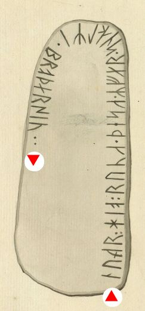
Bildquelle: Søren Abildgaard - Dänischen Nationalmuseums Kopenhagen, Digitale SammlungDie Inschrift, die von rechts unten nach links entlang der Steinkante verlaufend gelesen wird, lautet:
Iwar meisselte diese Runen über Skalmi, seinem Bruder (d.h. in den Leichenstein auf dem Grabe seines Bruders Skalmi).
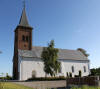 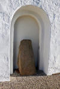 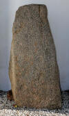


Søren Abildgaard (*18.02.1718 - 02.07.1791, Zeichner, Kupferstecher und Geologe)
 Bildquelle:
Jellingprojektet - Lizenz:
Public Domain -
http://www5.kb.dk/images/billed/2010/okt/billeder/object444188/da/
Bildquelle:
Jellingprojektet - Lizenz:
Public Domain -
http://www5.kb.dk/images/billed/2010/okt/billeder/object444188/da/
berichtet 1769 in seinem Tagebuch VI, S. 1, erstmals berichtete. Der Stein befand sich damals auf der Innenseite der westlichen Kirchhofeinfriedung. Er hat auch die unten eingestellte Zeichnung des Grabsteins angefertigt - Im Original 19 x 26 cm.
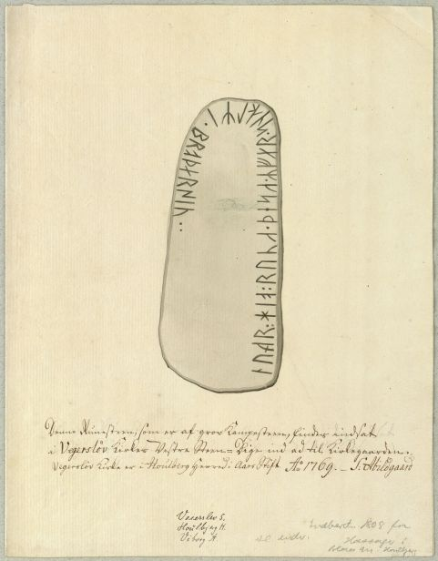
Darunter schrieb er diesen Text: Denne Runesteen, som er af grov Kampesteen, findes indsat i Vegersløv Kirkes Vestre Steen-Dige ind ad til Kirkegaarden. Vegersløv Kirke er i Houlberg Herred i Aars Stift. Ao 1769.- S: Abildgaard
Das Bild ist der Homepage des Dänischen Nationalmuseums Kopenhagen, Digitale Sammlung, entnommen - Lizenz: CC-BY-SA
Die nächste Nachricht stammt wohl vom 28.07.1808, als der örtliche Pfarrer, H. Hassager, einen Bericht abgab. Seitens der Altertümerkommission in Kopenhagen war namlich 1807 über die Bischöfe eine 12 Punkte umfassende Liste an alle Pfarrer im Land ergangen. Sie sollten darüber zu einem "verlängerten Auge" der Kommission werden, die sich mal wieder einen umfassenden Überblick über alle historischen Relikte im Land machen wollte. Er meldete daraufhin diesen Text:
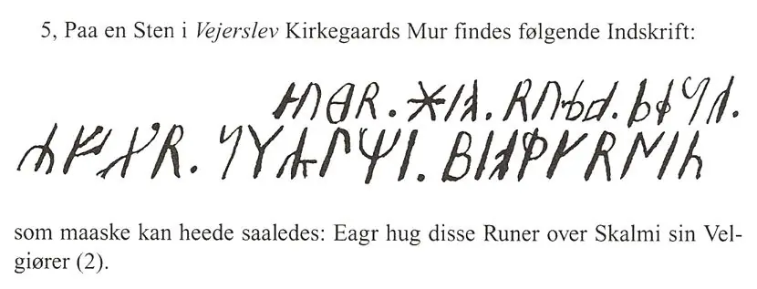
Quelle: Danske Præsters Indberetninger til Oldsagskommissionen af 1807, Nord- og Østjylland, Wormianum, Højbjerg 1996, Redigeret af Christian Adamsen og Vivi Jensen, S. 207
Danach lenkte der Schullehrer Josef Christensen (*1802 - 01.12.1891 - link-LIVES) aus Sahl im Jahr 1836 durch eine Mitteilung nach Kopenhagen die Aufmerksamkeit auf diesen Runenstein, worüber Finnur Magnusson (dänisch auch Finn Magnusen; * 27. August 1781 in Skálholt/Island; 24. Dezember 1847 in Kopenhagen, isländischer Philologe und Archivar - link-LIVES)
 Bildquelle:
Wikimedia - Lizenz:
Public Domain
Bildquelle:
Wikimedia - Lizenz:
Public Domain
im Jahre 1841 in seinem Werk "Runamo og runerne" auf der S. 551 ff. eine kurze Abhandlung bringt (Hier nur S. 551 wiedergegeben)
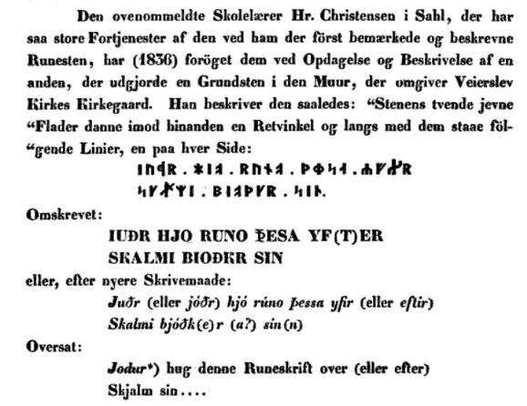
Eine Zeichnung des Runensteins hat Rasmus Henrik Kruse (*07.08.1796 - 30.05.1877, Landschaftsmaler - link-LIVES - Heirat 21.12.1851)
 Bildquelle:
Det Kgl. Biblioteks billedsamling - Lizenz:
Public Domain
Bildquelle:
Det Kgl. Biblioteks billedsamling - Lizenz:
Public Domain
in seinen "Nørre Jyllands Mærkværdigheder i det 19. Aarh. Hs. Bd 1-2 (med) Tillæg 1-2" aufgenommen. Genaugenommen 1852 im Band II, Nr. 23 zwischen den S. 49 und 50.
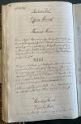 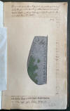 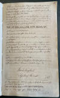


Dieses Werk wird heute im Nationalmuseum in Kopenhagen, Antikvarisk-Topografisk Arkiv, aufbewahrt. Dort durfte ich am Dienstag, 27.09.2022, zu Gast sein und die vier Bände in Händen halten und fotografieren.
Carl Christian Rafn (*16.01.1795 - 20.10.1864, Altertumsforscher - link LIVES - Bestattungsprotokoll)
 Bildquelle: Zeichner
Magnus Petersen -
Det Kgl. Biblioteks billedsamling - Lizenz:
Public Domain
Bildquelle: Zeichner
Magnus Petersen -
Det Kgl. Biblioteks billedsamling - Lizenz:
Public Domain
geht im Jahre 1856 in seinem Werk "Antiquités de l'Orient, monuments runographiques" auf der S. 207 auf diesen Runenstein unter "Vederslev" ein und gibt die nach Inschrift Kruses Bericht / Zeichnung wieder:
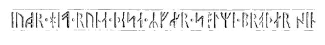
Zeichnungen von Prof. Julius Magnus Petersen (*04.09.1827 - 31.01.1917, Archäologischer Zeichner und Restaurator - link-LIVES - Bestattungsprotokoll)
 Bildquelle: Fotografie
von 1903 von Fotograf Marius Christensen
(*24.06.1874 -
25.06.1907) -
Det Kgl. Biblioteks billedsamling - Lizenz:
Public Domain
Bildquelle: Fotografie
von 1903 von Fotograf Marius Christensen
(*24.06.1874 -
25.06.1907) -
Det Kgl. Biblioteks billedsamling - Lizenz:
Public Domain
finden sich in den beiden großen dänischen Runenwerken.
Prof. P. G. Thorsen (*07.08.1811 - 06.05.1883, Bibliothekar, Runenforscher und Historiker - link-LIVES - Artikel: Levnedsbeskrivelser af de ved Københavns Universitets Firehundredaarsfest promoverede Doktorer, Illustreret Tidende 1882, Nr. 1235 - vom 27.05.1833 / Grabstein in Varde / Eheschließung in Varde am 19. August 1848)
 Fotografie
zw. 1863-1900
von Fotograf Budtz Müller
(*26.12.1837 -
30.12.1884) -
Det Kgl. Biblioteks billedsamling - Lizenz:
Public Domain
Fotografie
zw. 1863-1900
von Fotograf Budtz Müller
(*26.12.1837 -
30.12.1884) -
Det Kgl. Biblioteks billedsamling - Lizenz:
Public Domain
bringt eine in seinem Werk "De danske runemindesmærker beskrevne og forklarede, anden Afdeling, Jyllands Runemindesmærker, Afbildninger og Text, I. Afbildninger, 1879" unter der Nummer 51 - Google Scan. Textausführungen bringt er dann erst in dem im Folgejahr - 1880 - erschienenen "Band II, Text" auf der Seite 145/146.
Prof. Ludv. F. A. Wimmer (*07.02.1839 - 29.04.1920, Philologe und Runenforscher - link-LIVES - Politiets registerblade - Bestattungsprotokoll)
 Bildquelle:
Fotografie zw. 1877-1900 von Fotograf Hansen & Weller
-
Det Kgl. Biblioteks billedsamling - Lizenz:
Public Domain
Bildquelle:
Fotografie zw. 1877-1900 von Fotograf Hansen & Weller
-
Det Kgl. Biblioteks billedsamling - Lizenz:
Public Domain
veröffentlicht seine Studien zu dem Runenstein in seinem großformatigen Werk "De danske runemindesmærker undersøgte og tolkede af Ludv. F. A. Wimmer, Band IV.1, Runeligsten og Mindesmærker Knyttede til Kirker, 1903-04" zu der Nr. 2, S. 7ff. - eigener Scan. Er hat den Runenstein persönlich vor Ort am 27. August 1877 untersucht. Von ihm war die Zeichnung von Prof. Magnus Petersen darüber auch noch überarbeitet worden.
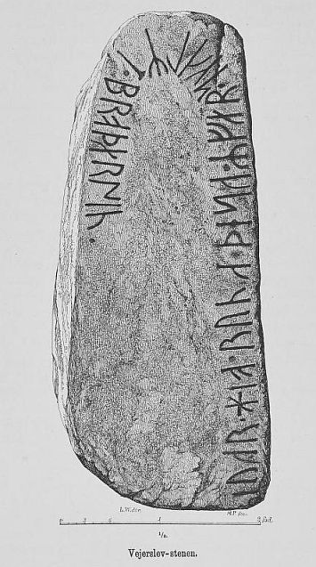
Prof. Ludv. F. A. Wimmer hat seine jahrelangen Aufzeichnungen der "Kgl. Bibliotek" in Kopenhagen überlassen. Ein Verzeichnis darüber wurde 1915 in Buchform herausgegeben - "Collectio runologica Wimmeriana: Fortegnelse over Ludv. F. A. Wimmers runologiske o. a. Samlinger i Det kgl. Bibliotek"
In seinen Unterlagen in der Kgl. Bibliothek befinden sich in "III - Originaltegninger af de danske Runemindesmærker, udførte paa Undersøgelsesrejserne af Magn. Petersen og kontrollerede paa Stedet af Ludv. Wimmer, samt Prøvetryk af de paa Grundlag af de nævnte Tegninger, Aftryk o. s. v. til De danske Runemindesmærker" udførte Afbildninger med Wimmers Rettelser" unter der Nummer 42-44


diese Zeichnung von Prof. Julius Magnus Petersen, die er auf den 21.08.1877 datiert hat.
Erik Moltke (*04.04.1901 - 19.10.1984, Runologe, Historiker - link-LIVES)
 Bildquelle: Scan von Buchumschlag "Runerne i Danmark og ders
oprindelse" - Erik Moltke - 1976 - Lizenz:
CC-BY-SA
Bildquelle: Scan von Buchumschlag "Runerne i Danmark og ders
oprindelse" - Erik Moltke - 1976 - Lizenz:
CC-BY-SA
hat dieses Foto am 05.06.1930 aufgenommen.
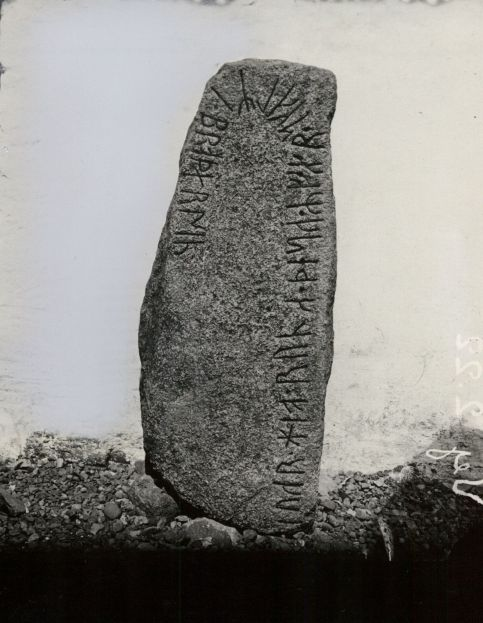
Der Digitalen Sammlung des Nationalmuseums Kopenhagen entlehnt - Lizenz: CC-BY-SA
Die Informationen zu diesem Runenstein aus der dänischen Runendatenbank finden sich hier.
Der entsprechende Eintrag in "Fund og Fortidsminder" ist hier verlinkt. Darin ist inzwischen auch dieser Zustandsbericht aus 2018 des Steinrestaurators Leif Vognsen eingebunden.
Über diesen Link finden sich zu dem Runenstein Informationen des Forschungsprojektes "Runes" der Akademie der Wissenschaften zu Göttingen.